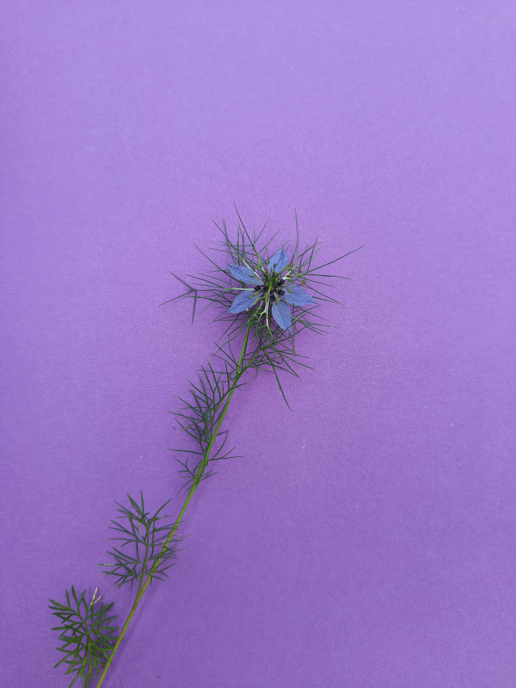
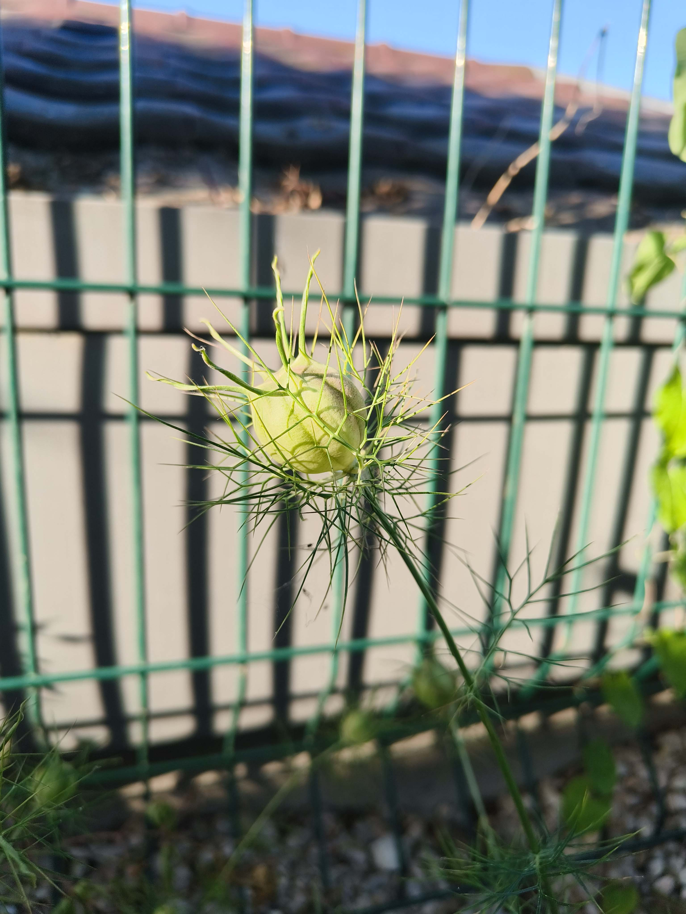
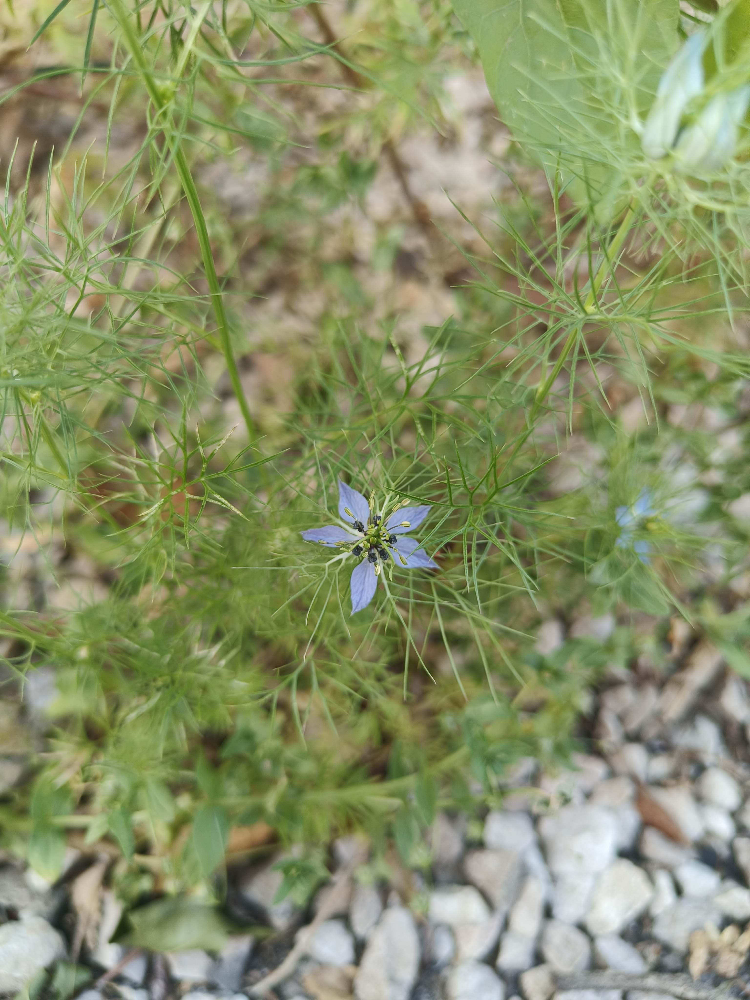

Ranunculaceae
Nigella damascena L.
Nigelle de Damas
Feuilles à divisions fines et linéaires. Sépales ressemblent aux feuilles!
Pétales peuvent être plus nombreux que 5 et/ou blancs (voir infoflora)


